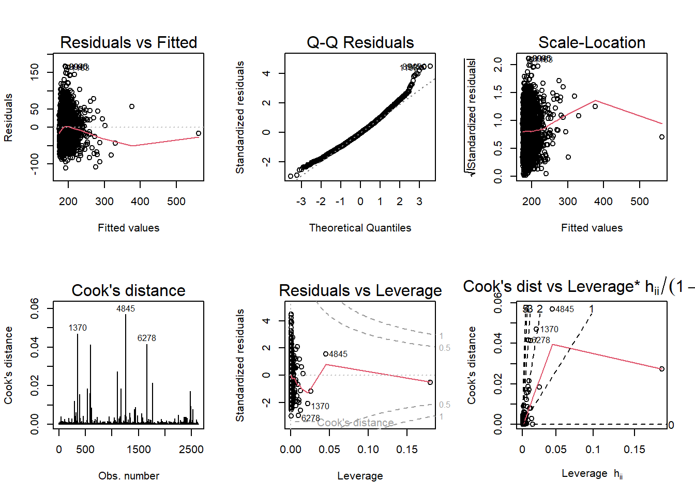
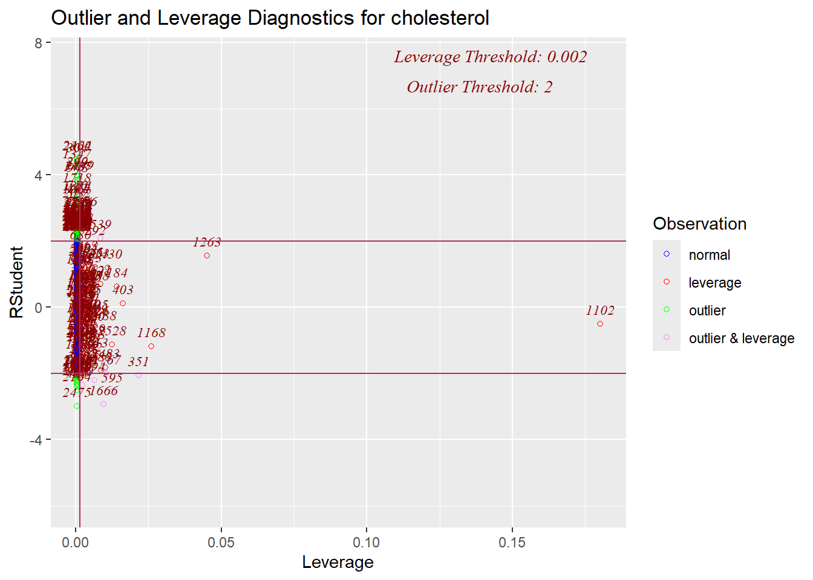

Continuous outcome
Let us focus on issues related to predictive modeling for continuous outcomes in 4 steps:
Diagnosis Phase: Identifies outliers, leverage points, and residuals that could affect the model.
Cleaning Phase: Deletes problematic data based on predefined conditions.
Modeling Phase: Various models are fitted including polynomial models and a comprehensive model with multiple predictors.
Colinearity Check: A rule of thumb is used to check for multicollinearity in the comprehensive model, and problematic variables are flagged.
Explore relationships for continuous outcome variable
First, load several R packages for statistical modeling, data manipulation, and visualization.
Load data
Here, a dataset is loaded into the R environment from an RData file.
Show the code
load(file = "Data/predictivefactors/cholesterolNHANES15.RData")Correlation plot
We can use the cor function to see the correlation between numeric variables and then use the corrplot function to plot the cor object. The plot helps in understanding the linear or nonlinear relationships between different numerical variables.
Show the code
require(corrplot)
numeric.names <- c("age", "diastolicBP", "systolicBP",
"bodyweight", "bodyheight", "bmi", "waist", "alcohol",
"cholesterol", "triglycerides", "uric.acid",
"protein", "bilirubin", "phosphorus", "sodium", "potassium",
"globulin", "calcium")
correlationMatrix <- cor(analytic[numeric.names])
mat.num <- round(correlationMatrix,2)
mat.num[mat.num>0.8 & mat.num < 1]
#> [1] 0.89 0.90 0.89 0.91 0.90 0.91
corrplot(correlationMatrix, method="number", type="upper")Examine descriptive associations
Let us examine the descriptive associations with the dependent variable by stratifying separately by key predictors
There are multiple ways to examine the descriptive associations by strata/groups, e.g., summarize, aggregate, describeBy, tapply, summary
The code calculates and explores various ways to describe the cholesterol levels, stratified by key predictors such as gender.
Show the code
mean(analytic$cholesterol)
#> [1] 193.1002
# Process 1
mean(analytic$cholesterol[analytic$gender == "Male"])
#> [1] 190.7626
mean(analytic$cholesterol[analytic$gender == "Female"])
#> [1] 196.7339
# Process 2
library(dplyr)
analytic %>%
group_by(gender) %>%
summarize(mean.ch=mean(cholesterol), .groups = 'drop') Show the code
Show the code
# process 4
psych::describeBy(analytic$cholesterol, analytic$gender)
#>
#> Descriptive statistics by group
#> group: Female
#> vars n mean sd median trimmed mad min max range skew kurtosis se
#> X1 1 496 196.73 43.26 194.5 194.44 40.77 100 358 258 0.57 0.56 1.94
#> ------------------------------------------------------------
#> group: Male
#> vars n mean sd median trimmed mad min max range skew kurtosis se
#> X1 1 771 190.76 43.06 188 188.54 40.03 81 545 464 1.1 5.76 1.55
# process 5
tapply(analytic$cholesterol, analytic$gender, summary)
#> $Female
#> Min. 1st Qu. Median Mean 3rd Qu. Max.
#> 100.0 166.8 194.5 196.7 220.2 358.0
#>
#> $Male
#> Min. 1st Qu. Median Mean 3rd Qu. Max.
#> 81.0 161.0 188.0 190.8 215.0 545.0
# A general process
sel.names <- c("gender", "age", "born", "race", "education", "married",
"income", "diastolicBP", "systolicBP",
"bodyweight", "bodyheight", "bmi", "waist", "smoke", "alcohol",
"cholesterol", "triglycerides", "uric.acid",
"protein", "bilirubin", "phosphorus", "sodium", "potassium",
"globulin", "calcium", "physical.work", "physical.recreational",
"diabetes")
var.summ <- summary(cholesterol~ ., data = analytic[sel.names])
var.summ
#> cholesterol N= 1267
#>
#> +---------------------+--------------------------------+----+-----------+
#> | | | N|cholesterol|
#> +---------------------+--------------------------------+----+-----------+
#> | gender| Female| 496| 196.7339|
#> | | Male| 771| 190.7626|
#> +---------------------+--------------------------------+----+-----------+
#> | age| [20,37)| 342| 182.4854|
#> | | [37,52)| 313| 200.1661|
#> | | [52,64)| 315| 199.7873|
#> | | [64,80]| 297| 190.7845|
#> +---------------------+--------------------------------+----+-----------+
#> | born|Born in 50 US states or Washingt| 991| 190.9253|
#> | | Others| 276| 200.9094|
#> +---------------------+--------------------------------+----+-----------+
#> | race| Black| 246| 187.3740|
#> | | Hispanic| 337| 193.5490|
#> | | Other| 132| 191.8561|
#> | | White| 552| 195.6757|
#> +---------------------+--------------------------------+----+-----------+
#> | education| College| 648| 192.5478|
#> | | High.School| 523| 193.4532|
#> | | School| 96| 194.9062|
#> +---------------------+--------------------------------+----+-----------+
#> | married| Married| 751| 194.0306|
#> | | Never.married| 226| 182.8761|
#> | | Previously.married| 290| 198.6586|
#> +---------------------+--------------------------------+----+-----------+
#> | income| <25k| 344| 191.9564|
#> | | Between.25kto54k| 435| 191.9310|
#> | | Between.55kto99k| 297| 195.7508|
#> | | Over100k| 191| 193.7016|
#> +---------------------+--------------------------------+----+-----------+
#> | diastolicBP| [ 0, 64)| 336| 186.7649|
#> | | [64, 72)| 321| 189.3458|
#> | | [72, 80)| 319| 195.7085|
#> | | [80,112]| 291| 201.6976|
#> +---------------------+--------------------------------+----+-----------+
#> | systolicBP| [ 84,116)| 340| 186.2765|
#> | | [116,126)| 317| 190.6372|
#> | | [126,138)| 335| 196.9881|
#> | | [138,236]| 275| 199.6400|
#> +---------------------+--------------------------------+----+-----------+
#> | bodyweight| [39.7, 69.8)| 319| 193.8903|
#> | | [69.8, 81.5)| 316| 197.1424|
#> | | [81.5, 97.2)| 317| 192.4984|
#> | | [97.2,178.4]| 315| 188.8508|
#> +---------------------+--------------------------------+----+-----------+
#> | bodyheight| [144,163)| 317| 198.7003|
#> | | [163,169)| 320| 193.7750|
#> | | [169,176)| 314| 189.8790|
#> | | [176,201]| 316| 190.0000|
#> +---------------------+--------------------------------+----+-----------+
#> | bmi| [16.3,24.9)| 322| 188.8043|
#> | | [24.9,28.7)| 315| 198.5016|
#> | | [28.7,33.4)| 317| 197.5016|
#> | | [33.4,64.5]| 313| 187.6262|
#> +---------------------+--------------------------------+----+-----------+
#> | waist| [ 65.0, 90.7)| 320| 188.9688|
#> | | [ 90.7,100.4)| 315| 199.6413|
#> | | [100.4,111.3)| 316| 197.3892|
#> | | [111.3,161.5]| 316| 186.4747|
#> +---------------------+--------------------------------+----+-----------+
#> | smoke| Every.day| 448| 191.5938|
#> | | Not.at.all| 665| 194.6451|
#> | | Some.days| 154| 190.8117|
#> +---------------------+--------------------------------+----+-----------+
#> | alcohol| 1| 336| 191.0387|
#> | | 2| 371| 192.0809|
#> | | [3, 5)| 295| 195.9356|
#> | | [5,15]| 265| 193.9849|
#> +---------------------+--------------------------------+----+-----------+
#> | triglycerides| [ 18, 85)| 320| 172.2344|
#> | | [ 85, 128)| 319| 185.6834|
#> | | [128, 203)| 314| 199.4140|
#> | | [203,3061]| 314| 215.5860|
#> +---------------------+--------------------------------+----+-----------+
#> | uric.acid| [1.6, 4.7)| 348| 188.9310|
#> | | [4.7, 5.6)| 305| 191.8033|
#> | | [5.6, 6.6)| 307| 195.7720|
#> | | [6.6,18.0]| 307| 196.4430|
#> +---------------------+--------------------------------+----+-----------+
#> | protein| [5.7,6.9)| 336| 189.8631|
#> | | [6.9,7.2)| 328| 192.3201|
#> | | [7.2,7.5)| 310| 193.4258|
#> | | [7.5,9.0]| 293| 197.3413|
#> +---------------------+--------------------------------+----+-----------+
#> | bilirubin| [0.0,0.5)| 506| 195.7391|
#> | | 0.5| 212| 192.2264|
#> | | [0.6,0.8)| 310| 192.0645|
#> | | [0.8,3.3]| 239| 189.6318|
#> +---------------------+--------------------------------+----+-----------+
#> | phosphorus| [1.8,3.4)| 362| 188.0387|
#> | | [3.4,3.7)| 309| 192.5405|
#> | | [3.7,4.1)| 323| 195.5542|
#> | | [4.1,6.1]| 273| 197.5421|
#> +---------------------+--------------------------------+----+-----------+
#> | sodium| [124,138)| 362| 191.9420|
#> | | [138,140)| 495| 194.2929|
#> | | 140| 206| 191.7864|
#> | | [141,148]| 204| 193.5882|
#> +---------------------+--------------------------------+----+-----------+
#> | potassium| [2.60,3.79)| 320| 191.5375|
#> | | [3.79,3.99)| 328| 192.3628|
#> | | [3.99,4.20)| 308| 196.9643|
#> | | [4.20,5.51]| 311| 191.6592|
#> +---------------------+--------------------------------+----+-----------+
#> | globulin| [1.6,2.6)| 350| 189.9429|
#> | | [2.6,2.9)| 388| 199.0052|
#> | | [2.9,3.1)| 230| 193.3783|
#> | | [3.1,5.5]| 299| 188.9197|
#> +---------------------+--------------------------------+----+-----------+
#> | calcium| [8.4, 9.2)| 371| 186.0323|
#> | | [9.2, 9.4)| 294| 188.3605|
#> | | [9.4, 9.7)| 395| 197.4430|
#> | | [9.7,11.1]| 207| 204.2126|
#> +---------------------+--------------------------------+----+-----------+
#> | physical.work| No| 895| 194.0078|
#> | | Yes| 372| 190.9167|
#> +---------------------+--------------------------------+----+-----------+
#> |physical.recreational| No|1002| 193.5359|
#> | | Yes| 265| 191.4528|
#> +---------------------+--------------------------------+----+-----------+
#> | diabetes| No|1064| 194.8036|
#> | | Yes| 203| 184.1724|
#> +---------------------+--------------------------------+----+-----------+
#> | Overall| |1267| 193.1002|
#> +---------------------+--------------------------------+----+-----------+
plot(var.summ)
Show the code
summary(analytic$diastolicBP)
#> Min. 1st Qu. Median Mean 3rd Qu. Max.
#> 0.00 62.00 70.00 70.37 78.00 112.00
analytic$diastolicBP[analytic$diastolicBP == 0] <- NA
# Bivariate Summaries Computed Separately by a Series of Predictors
var.summ2 <- spearman2(cholesterol~ ., data = analytic[sel.names])
plot(var.summ2)Regression: Linear regression
A linear regression model is fitted to explore the association between cholesterol levels and triglycerides. Various summary statistics are also generated for the model.
We use lm function to fit the linear regression
Show the code
# set up formula with just 1 variable
formula0 <- as.formula("cholesterol~triglycerides")
# fitting regression on the analytic2 data
fit0 <- lm(formula0,data = analytic2)
# extract results
summary(fit0)
#>
#> Call:
#> lm(formula = formula0, data = analytic2)
#>
#> Residuals:
#> Min 1Q Median 3Q Max
#> -111.651 -26.157 -2.661 22.549 166.752
#>
#> Coefficients:
#> Estimate Std. Error t value Pr(>|t|)
#> (Intercept) 1.716e+02 1.127e+00 152.23 <2e-16 ***
#> triglycerides 1.275e-01 5.456e-03 23.37 <2e-16 ***
#> ---
#> Signif. codes: 0 '***' 0.001 '**' 0.01 '*' 0.05 '.' 0.1 ' ' 1
#>
#> Residual standard error: 37.38 on 2632 degrees of freedom
#> Multiple R-squared: 0.1718, Adjusted R-squared: 0.1715
#> F-statistic: 546 on 1 and 2632 DF, p-value: < 2.2e-16
# extract just the coefficients/estimates
coef(fit0)
#> (Intercept) triglycerides
#> 171.6147531 0.1274909
# extract confidence intervals
confint(fit0)
#> 2.5 % 97.5 %
#> (Intercept) 169.4042284 173.8252779
#> triglycerides 0.1167919 0.1381899
# residual plots
layout(matrix(1:6, byrow = T, ncol = 3))
plot(fit0, which = 1:6)
Diagnosis
Identifying problematic data
Outliers: We can begin by plotting cholesterol against triglycerides to visualize any potential outliers. We can then identify data points where triglycerides are high.
Leverage: It calculates and plots leverage points. Leverage points that have values greater than 0.05 are isolated for inspection.
Residuals: Studentized residuals are computed for each data point to identify potential outliers. Those with values less than -5 are identified.
Show the code
subset(analytic2, triglycerides > 1500)Show the code
# leverage
ols_plot_resid_lev(fit0)
Show the code
analytic2$lev <- hat(model.matrix(fit0))
plot(analytic2$lev)Show the code
Show the code

Show the code
which(analytic2$rstudent.values < -5)
#> integer(0)
# Heteroskedasticity: Test for constant variance
#ols_test_breusch_pagan(fit0, rhs = TRUE)Deleting suspicious data
We then delete observations based on two conditions: triglycerides > 1500 and leverage > 0.05.
Show the code
# condition 1: triglycerides above 1500 needs deleting
analytic2b <- subset(analytic2, triglycerides < 1500)
dim(analytic2b)
#> [1] 2632 34
# condition 2: leverage above 0.05 needs deleting
analytic3 <- subset(analytic2b, lev < 0.05)
dim(analytic3)
#> [1] 2632 34
# Check how many observations are deleted
nrow(analytic2)-nrow(analytic3)
#> [1] 2Refitting in cleaned data
We refit the linear model on this cleaned data, and diagnostic plots are generated.
Show the code
### Re-fit in data analytic3 (without problematic data)
formula0
#> cholesterol ~ triglycerides
fit0 <- lm(formula0,data = analytic3)
require(Publish)
publish(fit0)
#> Variable Units Coefficient CI.95 p-value
#> (Intercept) 171.74 [169.37;174.11] < 1e-04
#> triglycerides 0.13 [0.11;0.14] < 1e-04
layout(matrix(1:6, byrow = T, ncol = 3))
plot(fit0, which = 1:6)

polynomial order 2
We fit polynomial models of orders 2 and 3 to explore non-linear relationships between cholesterol and triglycerides.
Show the code
formula1 <- as.formula("cholesterol~poly(triglycerides,2)")
formula1 <- as.formula("cholesterol~triglycerides^2")
fit1 <- lm(formula1,data = analytic3)
publish(fit1)
#> Variable Units Coefficient CI.95 p-value
#> (Intercept) 171.74 [169.37;174.11] < 1e-04
#> triglycerides 0.13 [0.11;0.14] < 1e-04
# Partial Residual Plots
crPlots(fit1)Show the code
# compare fit0 and fit1 models
anova(fit0,fit1)polynomial order 3
Show the code
# Fit a polynomial of order 3
formula2 <- as.formula("cholesterol~poly(triglycerides,3)")
formula2 <- as.formula("cholesterol~triglycerides^3")
fit2 <- lm(formula2,data = analytic3)
publish(fit2)
#> Variable Units Coefficient CI.95 p-value
#> (Intercept) 171.74 [169.37;174.11] < 1e-04
#> triglycerides 0.13 [0.11;0.14] < 1e-04
# Partial Residual Plots
crPlots(fit2)
Show the code
# compare fit1 and fit2 models
anova(fit1,fit2)Multiple covariates
We add more covariates.
Show the code
# include everything!
formula3 <- as.formula("cholesterol~gender + age + born +
race + education + married +
income + diastolicBP + systolicBP +
bmi + bodyweight + bodyheight + waist +
triglycerides + uric.acid +
protein + bilirubin + phosphorus + sodium + potassium +
globulin + calcium + physical.work + physical.recreational +
diabetes")
fit3 <- lm(formula3, data = analytic3)
publish(fit3)
#> Variable Units Coefficient CI.95 p-value
#> (Intercept) 280.02 [133.42;426.62] 0.0001852
#> gender Female Ref
#> Male -11.99 [-16.41;-7.57] < 1e-04
#> age 0.35 [0.23;0.47] < 1e-04
#> born Born in 50 US states or Washingt Ref
#> Others 7.52 [3.68;11.36] 0.0001270
#> race Black Ref
#> Hispanic -6.15 [-10.87;-1.44] 0.0106253
#> Other -5.37 [-10.92;0.18] 0.0579281
#> White -0.95 [-5.21;3.30] 0.6603698
#> education College Ref
#> High.School 2.90 [-0.28;6.08] 0.0743132
#> School -2.54 [-8.61;3.54] 0.4134016
#> married Married Ref
#> Never.married -5.72 [-9.63;-1.81] 0.0041887
#> Previously.married 0.31 [-3.54;4.17] 0.8730460
#> income <25k Ref
#> Between.25kto54k -0.97 [-4.87;2.93] 0.6261315
#> Between.55kto99k 2.29 [-1.98;6.56] 0.2928564
#> Over100k 2.44 [-2.27;7.14] 0.3099380
#> diastolicBP 0.38 [0.25;0.50] < 1e-04
#> systolicBP 0.02 [-0.08;0.12] 0.6668119
#> bmi -2.55 [-4.29;-0.81] 0.0041392
#> bodyweight 0.82 [0.19;1.45] 0.0105518
#> bodyheight -0.89 [-1.55;-0.24] 0.0074286
#> waist -0.02 [-0.29;0.26] 0.9020424
#> triglycerides 0.12 [0.11;0.14] < 1e-04
#> uric.acid 1.27 [0.08;2.47] 0.0369190
#> protein 4.99 [-0.77;10.74] 0.0897748
#> bilirubin -5.43 [-10.53;-0.33] 0.0370512
#> phosphorus -0.18 [-2.81;2.45] 0.8939361
#> sodium -0.97 [-1.66;-0.29] 0.0052516
#> potassium 1.04 [-3.44;5.52] 0.6487979
#> globulin -2.25 [-8.22;3.71] 0.4591138
#> calcium 12.02 [6.98;17.07] < 1e-04
#> physical.work No Ref
#> Yes -0.45 [-3.68;2.79] 0.7858787
#> physical.recreational No Ref
#> Yes 1.35 [-1.94;4.65] 0.4210703
#> diabetes No Ref
#> Yes -19.11 [-23.37;-14.85] < 1e-04Colinearity
We finally check for multicollinearity among predictors using the Variance Inflation Factor (VIF).
Rule of thumb: variables with VIF > 4 needs further investigation
Show the code
car::vif(fit3)
#> GVIF Df GVIF^(1/(2*Df))
#> gender 2.694171 1 1.641393
#> age 2.164388 1 1.471186
#> born 1.611478 1 1.269440
#> race 2.463445 3 1.162137
#> education 1.435876 2 1.094660
#> married 1.481141 2 1.103187
#> income 1.402249 3 1.057964
#> diastolicBP 1.271126 1 1.127442
#> systolicBP 1.594986 1 1.262928
#> bmi 81.811969 1 9.044997
#> bodyweight 101.102349 1 10.054966
#> bodyheight 21.863188 1 4.675809
#> waist 11.913719 1 3.451626
#> triglycerides 1.219331 1 1.104233
#> uric.acid 1.603290 1 1.266211
#> protein 3.622385 1 1.903256
#> bilirubin 1.185035 1 1.088593
#> phosphorus 1.116982 1 1.056874
#> sodium 1.120920 1 1.058735
#> potassium 1.178381 1 1.085533
#> globulin 3.371211 1 1.836086
#> calcium 1.591677 1 1.261617
#> physical.work 1.087315 1 1.042744
#> physical.recreational 1.226830 1 1.107624
#> diabetes 1.210715 1 1.100325
collinearity <- ols_vif_tol(fit3)
collinearityShow the code
# VIF > 4
collinearity[collinearity$VIF>4,]Show the code
formula4 <- as.formula("cholesterol~gender + age + born +
race + education + married +
income + diastolicBP + systolicBP +
bmi + # bodyweight + bodyheight + waist +
triglycerides + uric.acid +
protein + bilirubin + phosphorus + sodium + potassium +
globulin + calcium + physical.work + physical.recreational +
diabetes")
fit4 <- lm(formula4, data = analytic3)
publish(fit4)
#> Variable Units Coefficient CI.95 p-value
#> (Intercept) 136.87 [34.96;238.79] 0.008533
#> gender Female Ref
#> Male -13.06 [-16.60;-9.53] < 1e-04
#> age 0.35 [0.24;0.46] < 1e-04
#> born Born in 50 US states or Washingt Ref
#> Others 7.88 [4.06;11.69] < 1e-04
#> race Black Ref
#> Hispanic -5.79 [-10.34;-1.24] 0.012740
#> Other -4.88 [-10.33;0.57] 0.079497
#> White -0.85 [-5.02;3.33] 0.690720
#> education College Ref
#> High.School 2.85 [-0.32;6.02] 0.078008
#> School -2.45 [-8.49;3.60] 0.427694
#> married Married Ref
#> Never.married -5.74 [-9.65;-1.83] 0.004088
#> Previously.married 0.34 [-3.52;4.20] 0.861981
#> income <25k Ref
#> Between.25kto54k -0.87 [-4.77;3.03] 0.663123
#> Between.55kto99k 2.46 [-1.79;6.71] 0.256585
#> Over100k 2.63 [-2.07;7.32] 0.272886
#> diastolicBP 0.37 [0.25;0.50] < 1e-04
#> systolicBP 0.03 [-0.07;0.13] 0.544971
#> bmi -0.31 [-0.54;-0.08] 0.009302
#> triglycerides 0.12 [0.11;0.14] < 1e-04
#> uric.acid 1.36 [0.16;2.55] 0.025926
#> protein 4.77 [-0.98;10.51] 0.104059
#> bilirubin -6.06 [-11.14;-0.98] 0.019519
#> phosphorus -0.08 [-2.71;2.55] 0.954561
#> sodium -1.03 [-1.71;-0.35] 0.003175
#> potassium 0.89 [-3.58;5.37] 0.695615
#> globulin -2.20 [-8.15;3.75] 0.469150
#> calcium 12.20 [7.16;17.25] < 1e-04
#> physical.work No Ref
#> Yes -0.44 [-3.68;2.80] 0.790297
#> physical.recreational No Ref
#> Yes 1.24 [-2.03;4.51] 0.457666
#> diabetes No Ref
#> Yes -19.03 [-23.26;-14.80] < 1e-04
# check if there is still any problematic variable
# with high collinearity problem
collinearity <- ols_vif_tol(fit4)
collinearity[collinearity$VIF>4,]Save data
Show the code
save.image(file = "Data/predictivefactors/cholesterolNHANES15part1.RData")